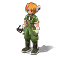
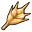

Pet Raising
How a partner grows stronger and stays ready to fight.
On this page
How partners grow
A partner grows in three separate ways:
| Growth | Raised by | Gives |
|---|---|---|
| Base Lv | EXP you earn |
|
| Partner Rank | Feeding snacks |
|
| Trust | Fighting together |
|
- Trust shows as a colour, e.g. Requires Trust in the Act Cube Information window. Lowest first:
- Black (lowest)
- Purple
- Blue
- Light Blue
- Green
- Yellow Green
- Yellow
- Orange
- Red
- Pink (highest)
Base Lv
- Your partner gets EXP whenever you do:
- monsters you or your party defeat
- quests and events
- using items
- Knight drills and sieges
- crafting, only if your main job is a Backpacker job
- It still gets EXP when you are at the max level. Your EXP-boost items don't raise it.
- Hit every monster at least once yourself. If your partner defeats it alone, you get no EXP and no drops.
- Ride partners are the exception: you get EXP normally while riding.
- Your partner doesn't take EXP away from other players fighting the same monster.
- A partner 31 or more Base Lv above you gets lower stats. A lower-level partner has no penalty.
Partner Rank
- Ranks go from H1 to SSS10, 10 steps per letter (H10 → G1).
- Letters, lowest first:
- H (lowest)
- G
- F
- E
- D
- C
- B
- A
- S
- SS
- SSS (highest)
- Every rank-up gives growth points. Spend them on a growth guideline:
| Guideline | Raises |
|---|---|
| Strengthen Physical | Max SP, Min/Max ATK |
| Strengthen Magical | Max MP, Min/Max MATK |
| Strengthen Durability | Max HP, DEF |
| Strengthen Mentality | MDEF, CSPD |
| Strengthen Accuracy | S.HIT, L.HIT |
| Strengthen Speed | S.AVOID, L.AVOID, ASPD |
- Each partner type has one matching guideline. Enough points in it give an extra stat bonus.
Snacks
- A snack works only within the Partner Rank range in its name.
- The time in the name is how long your partner waits before it can eat the next one.
- While a snack lasts, your partner gains trust faster:
- Trust1.3: 130% trust gain
- Trust1.5: 150% trust gain
- Trust1.8: 180% trust gain
- Put snacks in the snack slots and tick Automatically use snacks. Your partner eats one when hungry, lowest rank first.
- It doesn't eat during events or while you are logged out.
| Snack | Partner Rank | Rank EXP |
|---|---|---|
| Snack H1~D10 | H1–D10 |
|
| Snack F1~B10 | F1–B10 |
|
| Snack E1~A10 | E1–A10 |
|
| Snack D1~S10 | D1–S10 |
|
| Luxury Snack B1~SS5 | B1–SS5 |
|
| Luxury Snack A1~SSS10 | A1–SSS10 |
|
| Luxury Snack S1~SSS10 | S1–SSS10 |
|
Buying snacks
-
Buy them from Marc in Acronia Southern Plains.

Marc
Acronia Southern Plains
Cooking snacks
Cook them with  Cook. Higher kinds add a fish from Fishing; Luxury Snacks add a crop from Farming. Every recipe is on the Crafting page.
Cook. Higher kinds add a fish from Fishing; Luxury Snacks add a crop from Farming. Every recipe is on the Crafting page.

Partner Wheat (Cook Lv 1)- 1 ×
 Giant Barley Flour
Giant Barley Flour - 1 ×
 Salt
Salt - 1 ×
 Mineral Water
Mineral Water
- 1 ×
 Snack H1~D10 (Trust1.3) 5m (Cook Lv 1)
Snack H1~D10 (Trust1.3) 5m (Cook Lv 1)- 1 × Partner Wheat
- 1 ×
 Heal Potion
Heal Potion
 Snack F1~B10 (Trust1.3) 5m (Cook Lv 2)
Snack F1~B10 (Trust1.3) 5m (Cook Lv 2)- 1 × Snack H1~D10 (Trust1.3) 5m
- 1 fish, one of:
- 1 ×
 Snack E1~A10 (Trust1.3) 10m (Cook Lv 3)
Snack E1~A10 (Trust1.3) 10m (Cook Lv 3)- 1 × Snack F1~B10 (Trust1.3) 5m
- 1 fish, one of:
- 1 ×
- Snack D1~S10 (Trust1.3) 10m (Cook Lv 4)
 Luxury Snack B1~SS5 (Trust1.3) 20m (Cook Lv 5)
Luxury Snack B1~SS5 (Trust1.3) 20m (Cook Lv 5)- 1 × Snack H1~D10 (Trust1.3) 5m
- 1 crop, one of:
- 1 ×
 Luxury Snack A1~SSS10 (Trust1.3) 30m (Cook Lv 5)
Luxury Snack A1~SSS10 (Trust1.3) 30m (Cook Lv 5)- 1 × Luxury Snack B1~SS5 (Trust1.3) 20m
- 1 crop, one of:
- 1 ×
 Luxury Snack S1~SSS10 (Trust1.3) 50m (Cook Lv 5)
Luxury Snack S1~SSS10 (Trust1.3) 50m (Cook Lv 5)
- Trust1.5 and Trust1.8: the Trust1.3 snack plus one more item. For Snack H1~D10:
- Trust1.5: 1 ×
 Egg
Egg - Trust1.8: 1 ×
 Dried Fish
Dried Fish
- Trust1.5: 1 ×
- Longer snacks: the shortest snack of the same kind, as many as fit the time. For example:
- 30 minutes: 6 × the 5-minute snack
- 4 hours: 48 × the 5-minute snack
Health and intimacy
- At 0 HP your partner comes off and goes back to your inventory.
- It loses 1 intimacy and is injured for 10 minutes, with lower stats.
- The 10 minutes count down even while it is unequipped or you are logged out.
- At 0 intimacy you can't equip it, and it can't possess. It doesn't disappear: restore its intimacy and it works again.
 Partner Food and
Partner Food and  Plant Nutrients restore 100 HP, more for a partner with high HP recovery.
Plant Nutrients restore 100 HP, more for a partner with high HP recovery.
Restoring intimacy
-
Pet Doctor: +1 per day. Needs 10 Fame. The first visit also gives a candy worth +15. The doctor stands in three places:
-
Pet Doctor in the Morg Pet Cafe, Morg City
-
-
Pet Hermit in the Pet House: +3 per day. Only after he gives you a crawler, once per account. See How to Get Pets.
-
Items: Heartful Candy and Heartful Beans.
- Other characters: each character on your account can visit a Pet Doctor too, up to +3 per day in total. Move the partner through your warehouse.
- Catties: only the character who finished that Catty's quest can restore its intimacy.
 Pet Doctor
Pet Doctor
 Pet Doctor
Pet Doctor
 Pet Doctor
Pet Doctor
 Pet Hermit
Pet Hermit
Act cubes
- Act cubes teach your partner conditions, actions and skills for its AI. Use one while the partner is equipped.
- Get them from the Act Cube Machine <Conditions> and the Act Cube Machine <Action> in Acronia Southern Plains, or from monsters.
- A partner learns up to 30 conditions and 20 actions.
- Passive skills work as soon as they are learned.
- A forgotten cube is gone; it doesn't come back as an item.
Partner Chronicle Rebirth
Requirement: partner at Base Lv 110, and your character has reincarnated (see Reincarnation Quest). DEM characters need the "Lv100 Parts" quest instead.
-
Talk to Partner Old Master in Acronia Southern Plains.
 Partner Old Master
Partner Old MasterAcronia Southern Plains -
The partner goes back to Base Lv 1. Its base stats rise a lot, and it can learn skills only reborn partners get.
Good to know
- Trading or dropping a partner resets it. It keeps only its Base Lv (not the EXP toward the next level), rebirth, changed look, intimacy and name.
- Possessing partners still grow. They earn EXP and trust when you defeat monsters. See Possession.
- Robots don't grow. The
 2 Legged Walking Robot has no Base Lv, Partner Rank or trust.
2 Legged Walking Robot has no Base Lv, Partner Rank or trust.